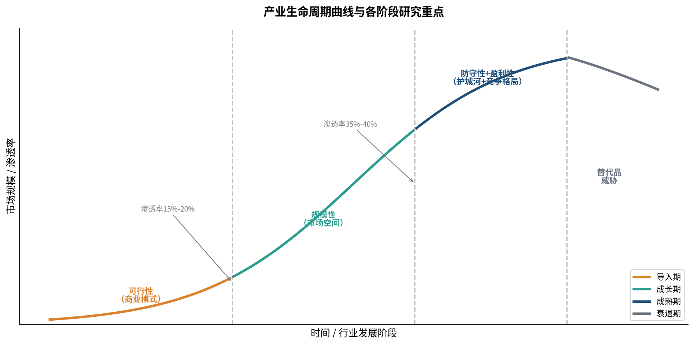
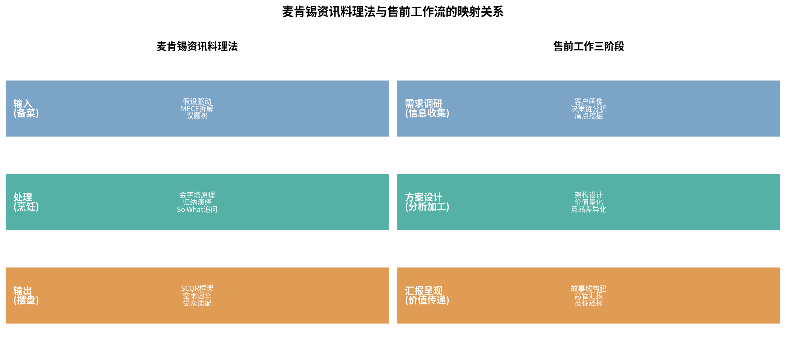
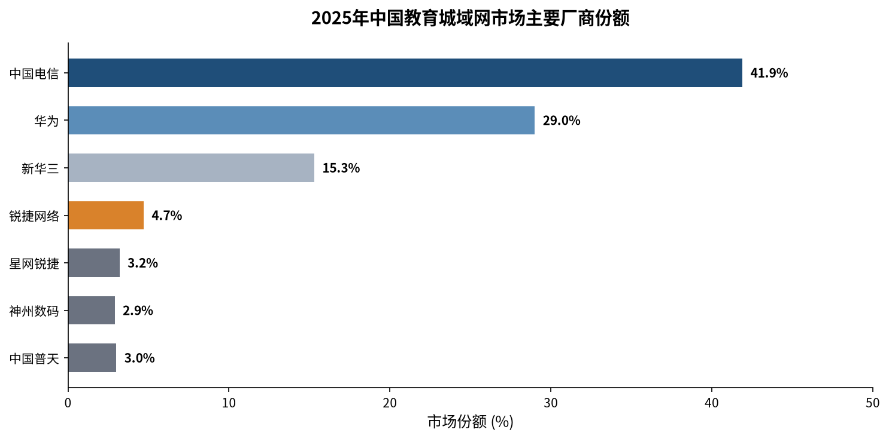

售前专家视角深度解读
肖璟的《如何快速了解一个行业》为售前工程师提供了一套可直接迁移的系统方法论：以产业生命周期为核心轴线，通过可行性、规模性、防守性、盈利性、估值、外部因素、景气度七大维度构建完整分析框架，辅以麦肯锡"资讯料理法"（输入-处理-输出）的研究流程和"空雨湿伞"的表达模型，几乎可以完整映射售前工作的全链条——从客户需求洞察到方案设计，从竞品分析到高管汇报。
对于锐捷网络这类面向政企、教育、运营商市场的网络设备厂商售前而言，这套方法论的价值尤为突出。网络基础设施项目往往金额大、周期长、决策链复杂，售前人员需要在短时间内吃透客户所在行业的业务逻辑、找准痛点、设计有竞争力的方案并说服多方决策者。传统售前工作依赖经验积累和个人悟性，而这本书提供了一套可复制、可培训的分析框架。
"产业生命周期+七大维度"与售前"行业理解-需求挖掘-方案设计-竞品分析"全流程高度对应
麦肯锡"资讯料理法"三阶段完美匹配售前"需求调研→方案设计→汇报呈现"
生成式AI可承担行业背景整理、方案初稿生成等基础工作，让售前聚焦高价值策略思考
传统行业分析框架（如SWOT、波特五力）像静态地图，反映的是某个时间点的行业状态。而肖璟在本书中提出的核心创新在于：把行业看作一个有生命、会成长的个体，用产业生命周期这条主线将所有分析维度串联起来。这样做的最大好处是——你只要判断出行业正处在哪个"年纪"，就立刻知道当下最该关心什么、最该警惕什么，从而快速抓住分析的要害。

| 阶段 | 核心问题 | 研究重点 | 典型特征 |
|---|---|---|---|
| 导入期 | 这件事能不能成立？ | 可行性（商业模式） | 渗透率<15%，亏损普遍，玩家少 |
| 成长期 | 蛋糕能做多大？ | 规模性（市场空间） | 渗透率15%-40%，增速最快，玩家涌入 |
| 成熟期 | 谁能笑到最后？ | 防守性+盈利性（护城河+竞争格局） | 渗透率>40%，增速放缓，格局固化 |
| 衰退期 | 会不会被替代？ | 替代品威胁 | 渗透率下降，需求萎缩，玩家退出 |
判断阶段的核心量化指标是渗透率。肖璟给出的经验值是：一旦行业渗透率达到15%～20%，行业就会进入快速提升的成长期；当渗透率提升至35%～40%以后，行业发展脚步往往开始放慢，进入成熟期。
售前视角 不要用同一套方案打所有阶段的客户。同样做智慧校园方案，面对新建高职院校（导入期）和双一流大学（成熟期），沟通切入点和方案侧重点应完全不同。导入期客户需要"为什么要做"的认知教育，成长期客户需要"怎么做得更好"的路径规划。
可行性是导入期行业的核心命题。核心分析工具是商业模式画布，通过九个问题快速理清一个生意的逻辑骨架：客户群体、价值主张、渠道通路、客户关系、收入来源、核心资源、关键业务、重要合作和成本结构。
验证商业模式可行性有两个对标方法：
售前应用 给客户做方案时，本质上也是在验证一个"微型商业模式"——客户投入这笔钱，能不能得到预期的回报。你需要帮客户想清楚：这个方案解决的是真实存在的痛点吗？投入产出比合理吗？后续能不能持续运营？
规模性是成长期行业的核心分析维度。引入硅谷经典的TAM/SAM/SOM三层市场规模模型：
测算市场规模有两种主流方法：Top-down（自上而下，从行业总规模逐级过滤）和Bottom-up（自下而上，从客户群数量×客单价往上计算）。
售前应用 用TAM/SAM/SOM的思路来量化客户的业务价值，比空泛地说"提升效率"有说服力得多。比如给学校做智慧校园方案，可以算：TAM是全校所有师生的信息化需求，SAM是当下能覆盖的院系和场景，SOM是第一期项目能落地的具体场景和预期收益。
防守性是成熟期行业的核心命题。巴菲特说过，他投资的核心标准就是看企业有没有"护城河"——也就是竞争对手复制不了的竞争优势。
第一类：生产要素（资源垄断型护城河）
第二类：生产关系（网络效应型护城河）
售前应用 给客户设计方案时，要主动帮客户构建"转换成本"——让客户的业务系统深度跑在你的网络架构上、把运维管理平台打磨得让客户IT团队离不开。反过来，分析竞品时也要看竞品的护城河，如果客户已经深度绑定竞品，切入策略就要调整。
横向格局：行业集中度——用CRn（前n大企业市场份额之和）来衡量。集中度越高，头部企业的定价权越强。
纵向格局：产业链利润分配——看产业链上下游各个环节的利润怎么分，最直观的指标是销售毛利率。很多行业的利润分布呈现"微笑曲线"。
售前应用 分析客户所在行业的利润分布，可以帮你找到客户最愿意花钱的环节——利润最丰厚的环节，往往也是IT投入最大方的环节。
估值：不同阶段适用不同估值逻辑。理解估值逻辑有助于判断客户的预算能力和投资意愿。
外部因素（PEST模型）：政治、经济、社会、技术四个维度。当四个维度的"东风"同时助推时，行业就会快速起飞。
景气度：通过高频指标预判行业短期业绩增速。纵向沿产业链找先行指标，横向看销量、价格、库存、开工率等。

售前应用 这个框架简直是为售前量身定做的！给客户讲方案、做汇报，本质上就是讲好一个"空雨湿伞"的故事：先讲行业趋势和客户现状（空），再点出客户面临的挑战和痛点（雨），接着说明不解决的后果（湿），最后亮出你的方案（伞）。
五类资讯源：统计机构、信息检索工具、社交网络、研究机构、专业数据库。
生成式AI的三阶段应用：
但必须警惕AI的三大局限性：稳定性不足、推理能力局限、AI幻觉。重要数据必须经过交叉验证。
售前应用 AI是售前的超级实习生。可以让它帮你整理行业背景、生成方案初稿、润色汇报材料，但核心判断、关键数据、客户沟通这些高价值环节，必须自己把控。用AI提效，但不用AI替代思考。
售前工作的起点是理解客户，但大多数售前对客户的理解停留在"客户说了什么需求"的表面层面。真正的需求洞察，需要从行业层面往下挖。
用商业模式画布的思路来审视你的方案：价值主张、客户群体、客户收益、总拥有成本……
用"通过XX方式，为XX客户，解决XX问题，带来XX价值"的句式，把方案核心价值说清楚。这句话说不清楚的方案，大概率是没有灵魂的功能堆砌。
用TAM/SAM/SOM的思路来量化方案的价值：
从三个方向构建竞争壁垒：
关键洞察 网络设备行业的"转换成本"比想象中高——客户用惯了你的设备和网管系统，运维人员熟悉你的命令行，整个网络架构基于你的产品设计，全部换掉的成本非常高。所以第一个项目的意义不仅在于当前的销售额，更在于建立了长期的客户粘性。
横向分析：市场份额与定位——不要只盯着直接竞争对手，要看整个行业的竞争格局。做竞品对比时，不要只是列功能参数表，要从客户的角度回答三个问题：
纵向分析：产业链中的位置——我们在客户的供应商体系中处于什么位置？上游是谁？下游是谁？有没有可能被集成？
护城河对比法：用无形资产、成本优势、网络效应、转换成本四个维度逐项对比你和竞品的优劣势。
"王处长，我们最近研究了一下教育行业的数字化趋势，发现现在有个很明显的变化——以前大家比的是谁建的系统多，现在比的是谁的系统用得好、数据价值能发挥出来。不知道您这边是不是也有类似的感受？"
"李总，我们在跟同行业的几家客户交流时，大家都提到一个头疼的问题——新校区建起来了，设备也买了不少，但运维团队的工作量翻了倍，人却没增加。不知道您这边有没有遇到类似的挑战？"
"张主任，上个月我们刚给隔壁XX大学做了智慧校园的整体方案，他们之前跟您这边情况很像——也是多校区、网络架构复杂、运维压力大。后来我们用极简以太全光的方案帮他们把运维效率提升了50%以上。今天过来主要是想跟您聊聊，看有没有什么能帮到您的。"
"您觉得这个行业接下来3-5年，最大的变化会是什么？"
"这个变化对您的业务会有什么影响？"
"为了应对这个变化，您这边最需要解决的三个问题是什么？"
"在您的整个业务链条中，哪个环节的效率最低？"
"这个环节目前主要靠什么方式在跑？"
"如果这个环节的效率提升30%，对整体业务会有多大影响？"
"您刚才提到的'智慧校园'，具体是指哪些场景呢？是指教学、管理、还是后勤？"
"您希望这个项目达到什么样的效果？是能跑通就行，还是要做到行业领先水平？"
"这个需求是今年必须上的，还是可以明年再考虑？"
（空）"现在教育数字化已经从'建系统'进入到'用数据'的阶段了，大家都在想怎么把数据用好。"
（雨）"但现实是，数据散在各个部门、各个系统里，想看个数据得找好几个部门要，根本没法及时决策。"
（湿）"上次教育局来检查，您这边光凑数据就花了一周时间，还差点耽误了汇报。"
（伞）"我们的智慧校园数据中台方案，就是专门解决这个问题的——把所有数据统一接入、统一治理，领导想看什么数据，大屏上直接就能看到。"
"我们的设备支持100G带宽，不是说这个参数有多牛，而是说——您现在的校园网可能10G就够了，但未来3-5年，随着AI教学、4K/8K视频这些应用起来，带宽需求肯定会翻好几倍。现在一步到位上100G，未来5年不用换核心设备，算下来反而更划算。"
"对比下来，我们跟A厂商的差异主要在三个方面：第一是XX，我们的优势是XXX；第二是XX，A厂的优势是XXX；第三是XX，两家差不多。综合来看，如果您最看重的是XX，那我们更合适；如果最看重的是XX，那A厂也可以考虑。"
行业生命周期定位：成长期向成熟期过渡。基础网络建设基本完成，正在向应用深化、数据治理、智能运营的方向演进。
行业生命周期定位：成长期。一线城市和头部高校已进入成熟期，县域和农村地区还在导入期，整体还有很大增长空间。

锐捷的市场地位：根据IDC数据，2024年Q1锐捷在高职教行业交换机市场占有率排名第一，普教行业排名第二，WLAN产品在教育行业排名第一。教育行业是锐捷的"根据地"，非常扎实。
行业生命周期定位：转型期（从成熟期寻找第二增长曲线）。传统通信业务增长见顶，运营商正在从"通信服务商"向"算力服务商""数字化服务商"转型。
| 维度 | 投资行业研究 | 售前行业研究 |
|---|---|---|
| 目的 | 判断值不值得投，能不能赚钱 | 判断值不值得跟进，能不能赢单 |
| 时间维度 | 看3-5年甚至更长的趋势 | 看1-2个季度内能不能落地项目 |
| 深度要求 | 财务深度（收入、利润、估值） | 业务深度（痛点、决策链、预算） |
| 研究对象 | 行业整体+头部公司 | 具体客户+具体项目 |
| 核心问题 | 行业好不好？公司行不行？ | 项目有没有？我们能不能赢？ |
核心差异 售前的行业研究是"为赢单服务的研究"，不是"为研究而研究"。研究的深度以够用为标准，能帮你拿下项目就行，不需要面面俱到。
肖璟的七大维度是通用框架，在此基础上，售前还需要补充三个"专属维度"：
肖璟的《如何快速了解一个行业》表面上是一本讲投资研究的书，但剥开外壳，它的内核是一套通用的"快速认知陌生领域"的方法论——用框架快速建立认知、用工具高效收集信息、用逻辑提炼洞察、用故事表达观点。
这套方法论，对售前工程师来说价值连城。因为售前的工作本质上就是——在最短的时间内，吃透一个陌生的客户/行业/项目，然后用专业的方案和表达说服客户买单。
从这个意义上说，售前和麦肯锡分析师做的是同一件事：用一周时间，从门外汉变成能跟专家对话的人。
不同的是，麦肯锡分析师靠的是一套可复制的方法论，而很多售前靠的是个人经验和悟性。这本书的价值就在于，它把那些"只可意会"的东西，变成了可以学习、可以训练、可以复用的系统方法。
"只要掌握正确、系统的方法论，大多数人都能得出准确率很高的分析结果。" —— 肖璟
💡 笔记自动保存在浏览器本地，刷新不丢失